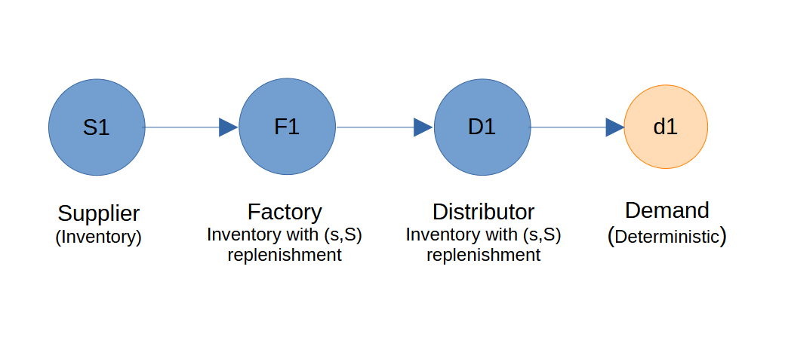

Supply Chain With Factory
This example demonstrates how to create an end-to-end supply chain involving a raw material supplier, a factory, and a warehouse.

Creating Nodes
In this scenario, we create a supplier with a limited inventory capacity. A raw material needs to be created and provided to the supplier when it is created with finite inventory. This raw material is defined by several parameters, including ID, name, extraction quantity, extraction time, and cost. The supplier is designed to hold only a single type of raw material in its inventory and is responsible for mining it to maintain inventory levels to fill capacity.
import SupplyNetPy.Components as scm
raw_mat1 = scm.RawMaterial(ID='rm1', name='raw_mat1', extraction_quantity=1000,
extraction_time=1, mining_cost=0.5, cost=0.8)
supplier1 = {'ID':'S1', 'name':'supplier1', 'node_type':'supplier', 'capacity':5000,
'initial_level':5000, 'inventory_holding_cost':0.01, 'raw_material':raw_mat1}
Creating a factory requires a product. A product and a factory can be created and configured as follows.
product1 = scm.Product(ID='p1', name='product1', manufacturing_cost=20, manufacturing_time=1,
batch_size=1000, raw_materials=[(raw_mat1, 2)], sell_price=30)
factory1 = {'ID':'F1', 'name':'factory1', 'node_type':'factory',
'capacity':2500, 'initial_level':2500, 'inventory_holding_cost':0.02,
'replenishment_policy':scm.SSReplenishment, 'policy_param': {'s':1000,'S':2500},
'product':product1, 'product_sell_price':30}
distributor1 = {'ID': 'D1', 'name': 'Distributor1', 'node_type': 'distributor',
'capacity': 1000, 'initial_level': 1000, 'inventory_holding_cost': 0.2,
'replenishment_policy': scm.SSReplenishment, 'policy_param': {'s':300,'S':1000},
'product_buy_price':30,'product_sell_price': 35}
The factory's behavior is to produce products based on a replenishment policy. In this example, inventory will be replenished when the level drops below a threshold (s). Therefore, the factory will begin manufacturing products once the inventory falls below this level and increase it back up to its maximum capacity (S).
Defining Links
Links represent the flow of products between nodes, with associated transportation costs and lead times.
links1f1 = {'ID': 'L1', 'source': 'S1', 'sink': 'F1', 'cost': 100, 'lead_time': lambda: 2}
linkf1d1 = {'ID': 'L2', 'source': 'F1', 'sink': 'D1', 'cost': 120, 'lead_time': lambda: 3}
Modeling Demand
Demand is generated at the distributor using deterministic arrival and quantity models.
demand1 = {'ID': 'd1', 'name': 'Demand1', 'order_arrival_model': lambda: 0.4,
'order_quantity_model': lambda: 30, 'demand_node': 'D1'}
Running the Simulation
Create the supply chain network and simulate it.
supplychainnet = scm.create_sc_net(nodes=[supplier1, factory1, distributor1],
links=[links1f1, linkf1d1], demands=[demand1])
supplychainnet = scm.simulate_sc_net(supplychainnet, sim_time=20, logging=True)
Review Results
Here is the simulation log generated by the network.
INFO F1 - 0.0000:F1: Inventory levels:2500, on hand:2500
INFO D1 - 0.0000:D1: Inventory levels:1000, on hand:1000
INFO d1 - 0.0000:d1:Customer1:Order quantity:30, available.
INFO D1 - 0.0000:D1: Inventory levels:970, on hand:970
INFO d1 - 0.4000:d1:Customer2:Order quantity:30, available.
INFO D1 - 0.4000:D1: Inventory levels:940, on hand:940
INFO d1 - 0.8000:d1:Customer3:Order quantity:30, available.
INFO D1 - 0.8000:D1: Inventory levels:910, on hand:910
INFO S1 - 1.0000:S1: Inventory level:5000
INFO d1 - 1.2000:d1:Customer4:Order quantity:30, available.
INFO D1 - 1.2000:D1: Inventory levels:880, on hand:880
INFO d1 - 1.6000:d1:Customer5:Order quantity:30, available.
INFO D1 - 1.6000:D1: Inventory levels:850, on hand:850
INFO S1 - 2.0000:S1: Inventory level:5000
INFO d1 - 2.0000:d1:Customer6:Order quantity:30, available.
INFO D1 - 2.0000:D1: Inventory levels:820, on hand:820
INFO d1 - 2.4000:d1:Customer7:Order quantity:30, available.
INFO D1 - 2.4000:D1: Inventory levels:790, on hand:790
INFO d1 - 2.8000:d1:Customer8:Order quantity:30, available.
INFO D1 - 2.8000:D1: Inventory levels:760, on hand:760
INFO S1 - 3.0000:S1: Inventory level:5000
INFO d1 - 3.2000:d1:Customer9:Order quantity:30, available.
INFO D1 - 3.2000:D1: Inventory levels:730, on hand:730
INFO d1 - 3.6000:d1:Customer10:Order quantity:30, available.
INFO D1 - 3.6000:D1: Inventory levels:700, on hand:700
INFO d1 - 4.0000:d1:Customer11:Order quantity:30, available.
INFO D1 - 4.0000:D1: Inventory levels:670, on hand:670
INFO S1 - 4.0000:S1: Inventory level:5000
INFO d1 - 4.4000:d1:Customer12:Order quantity:30, available.
INFO D1 - 4.4000:D1: Inventory levels:640, on hand:640
INFO d1 - 4.8000:d1:Customer13:Order quantity:30, available.
INFO D1 - 4.8000:D1: Inventory levels:610, on hand:610
INFO S1 - 5.0000:S1: Inventory level:5000
INFO d1 - 5.2000:d1:Customer14:Order quantity:30, available.
INFO D1 - 5.2000:D1: Inventory levels:580, on hand:580
INFO d1 - 5.6000:d1:Customer15:Order quantity:30, available.
INFO D1 - 5.6000:D1: Inventory levels:550, on hand:550
INFO S1 - 6.0000:S1: Inventory level:5000
INFO d1 - 6.0000:d1:Customer16:Order quantity:30, available.
INFO D1 - 6.0000:D1: Inventory levels:520, on hand:520
INFO d1 - 6.4000:d1:Customer17:Order quantity:30, available.
INFO D1 - 6.4000:D1: Inventory levels:490, on hand:490
INFO d1 - 6.8000:d1:Customer18:Order quantity:30, available.
INFO D1 - 6.8000:D1: Inventory levels:460, on hand:460
INFO S1 - 7.0000:S1: Inventory level:5000
INFO d1 - 7.2000:d1:Customer19:Order quantity:30, available.
INFO D1 - 7.2000:D1: Inventory levels:430, on hand:430
INFO d1 - 7.6000:d1:Customer20:Order quantity:30, available.
INFO D1 - 7.6000:D1: Inventory levels:400, on hand:400
INFO S1 - 8.0000:S1: Inventory level:5000
INFO d1 - 8.0000:d1:Customer21:Order quantity:30, available.
INFO D1 - 8.0000:D1: Inventory levels:370, on hand:370
INFO d1 - 8.4000:d1:Customer22:Order quantity:30, available.
INFO D1 - 8.4000:D1: Inventory levels:340, on hand:340
INFO d1 - 8.8000:d1:Customer23:Order quantity:30, available.
INFO D1 - 8.8000:D1: Inventory levels:310, on hand:310
INFO S1 - 9.0000:S1: Inventory level:5000
INFO d1 - 9.2000:d1:Customer24:Order quantity:30, available.
INFO D1 - 9.2000:D1: Inventory levels:280, on hand:280
INFO D1 - 9.2000:D1:Replenishing inventory from supplier:factory1, order placed for 720 units.
INFO D1 - 9.2000:D1:shipment in transit from supplier:factory1.
INFO F1 - 9.2000:F1: Inventory levels:1780, on hand:1780
INFO d1 - 9.6000:d1:Customer25:Order quantity:30, available.
INFO D1 - 9.6000:D1: Inventory levels:250, on hand:970
INFO S1 - 10.0000:S1: Inventory level:5000
INFO d1 - 10.0000:d1:Customer26:Order quantity:30, available.
INFO D1 - 10.0000:D1: Inventory levels:220, on hand:940
INFO d1 - 10.4000:d1:Customer27:Order quantity:30, available.
INFO D1 - 10.4000:D1: Inventory levels:190, on hand:910
INFO d1 - 10.8000:d1:Customer28:Order quantity:30, available.
INFO D1 - 10.8000:D1: Inventory levels:160, on hand:880
INFO S1 - 11.0000:S1: Inventory level:5000
INFO d1 - 11.2000:d1:Customer29:Order quantity:30, available.
INFO D1 - 11.2000:D1: Inventory levels:130, on hand:850
INFO d1 - 11.6000:d1:Customer30:Order quantity:30, available.
INFO D1 - 11.6000:D1: Inventory levels:100, on hand:820
INFO S1 - 12.0000:S1: Inventory level:5000
INFO d1 - 12.0000:d1:Customer31:Order quantity:30, available.
INFO D1 - 12.0000:D1: Inventory levels:70, on hand:790
INFO D1 - 12.2000:D1:Inventory replenished. reorder_quantity=720, Inventory levels:790
INFO d1 - 12.4000:d1:Customer32:Order quantity:30, available.
INFO D1 - 12.4000:D1: Inventory levels:760, on hand:760
INFO d1 - 12.8000:d1:Customer33:Order quantity:30, available.
INFO D1 - 12.8000:D1: Inventory levels:730, on hand:730
INFO S1 - 13.0000:S1: Inventory level:5000
INFO d1 - 13.2000:d1:Customer34:Order quantity:30, available.
INFO D1 - 13.2000:D1: Inventory levels:700, on hand:700
INFO d1 - 13.6000:d1:Customer35:Order quantity:30, available.
INFO D1 - 13.6000:D1: Inventory levels:670, on hand:670
INFO S1 - 14.0000:S1: Inventory level:5000
INFO d1 - 14.0000:d1:Customer36:Order quantity:30, available.
INFO D1 - 14.0000:D1: Inventory levels:640, on hand:640
INFO d1 - 14.4000:d1:Customer37:Order quantity:30, available.
INFO D1 - 14.4000:D1: Inventory levels:610, on hand:610
INFO d1 - 14.8000:d1:Customer38:Order quantity:30, available.
INFO D1 - 14.8000:D1: Inventory levels:580, on hand:580
INFO S1 - 15.0000:S1: Inventory level:5000
INFO d1 - 15.2000:d1:Customer39:Order quantity:30, available.
INFO D1 - 15.2000:D1: Inventory levels:550, on hand:550
INFO d1 - 15.6000:d1:Customer40:Order quantity:30, available.
INFO D1 - 15.6000:D1: Inventory levels:520, on hand:520
INFO S1 - 16.0000:S1: Inventory level:5000
INFO d1 - 16.0000:d1:Customer41:Order quantity:30, available.
INFO D1 - 16.0000:D1: Inventory levels:490, on hand:490
INFO d1 - 16.4000:d1:Customer42:Order quantity:30, available.
INFO D1 - 16.4000:D1: Inventory levels:460, on hand:460
INFO d1 - 16.8000:d1:Customer43:Order quantity:30, available.
INFO D1 - 16.8000:D1: Inventory levels:430, on hand:430
INFO S1 - 17.0000:S1: Inventory level:5000
INFO d1 - 17.2000:d1:Customer44:Order quantity:30, available.
INFO D1 - 17.2000:D1: Inventory levels:400, on hand:400
INFO d1 - 17.6000:d1:Customer45:Order quantity:30, available.
INFO D1 - 17.6000:D1: Inventory levels:370, on hand:370
INFO S1 - 18.0000:S1: Inventory level:5000
INFO d1 - 18.0000:d1:Customer46:Order quantity:30, available.
INFO D1 - 18.0000:D1: Inventory levels:340, on hand:340
INFO d1 - 18.4000:d1:Customer47:Order quantity:30, available.
INFO D1 - 18.4000:D1: Inventory levels:310, on hand:310
INFO d1 - 18.8000:d1:Customer48:Order quantity:30, available.
INFO D1 - 18.8000:D1: Inventory levels:280, on hand:280
INFO D1 - 18.8000:D1:Replenishing inventory from supplier:factory1, order placed for 720 units.
INFO D1 - 18.8000:D1:shipment in transit from supplier:factory1.
INFO F1 - 18.8000:F1: Inventory levels:1060, on hand:1060
INFO S1 - 19.0000:S1: Inventory level:5000
INFO d1 - 19.2000:d1:Customer49:Order quantity:30, available.
INFO D1 - 19.2000:D1: Inventory levels:250, on hand:970
INFO d1 - 19.6000:d1:Customer50:Order quantity:30, available.
INFO D1 - 19.6000:D1: Inventory levels:220, on hand:940
INFO d1 - 20.0000:d1:Customer51:Order quantity:30, available.
INFO D1 - 20.0000:D1: Inventory levels:190, on hand:910
INFO sim_trace - Supply chain info:
INFO sim_trace - available_inv : 6250
INFO sim_trace - avg_available_inv : 7634.5
INFO sim_trace - avg_cost_per_item : 8.663434343434345
INFO sim_trace - avg_cost_per_order : 485.4792452830189
INFO sim_trace - backorders : [0, 0]
INFO sim_trace - demand_by_customers : [51, 1530]
INFO sim_trace - demand_by_site : [2, 1440]
INFO sim_trace - demands : {'d1': Demand1}
INFO sim_trace - env : <simpy.core.Environment object at 0x00000196503EB290>
INFO sim_trace - fulfillment_received_by_customers : [51, 1530]
INFO sim_trace - fulfillment_received_by_site : [1, 720]
INFO sim_trace - inventory_carry_cost : 3890.4
INFO sim_trace - inventory_spend_cost : 21600
INFO sim_trace - inventory_waste : 0
INFO sim_trace - links : {'L1': S1 to F1, 'L2': F1 to D1}
INFO sim_trace - nodes : {'S1': supplier1, 'F1': factory1, 'D1': Distributor1}
INFO sim_trace - num_distributors : 1
INFO sim_trace - num_manufacturers : 1
INFO sim_trace - num_of_links : 2
INFO sim_trace - num_of_nodes : 3
INFO sim_trace - num_retailers : 0
INFO sim_trace - num_suppliers : 1
INFO sim_trace - profit : 49419.6
INFO sim_trace - revenue : 75150.0
INFO sim_trace - shortage : [0, 0]
INFO sim_trace - total_cost : 25730.4
INFO sim_trace - total_demand : [53, 2970]
INFO sim_trace - total_fulfillment_received : [52, 2250]
INFO sim_trace - transportation_cost : 240